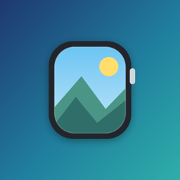

Watch PicWatch Pic は、お気に入りの写真を Apple Watch の文字盤のコンプリケーションに表示するアプリです。 電池残量や日付に合わせて画像を切り替えたり、天気やヘルスケアの情報を画像に重ねて表示したりできます。
できること
- iPhone で写真を選んで切り抜き、円形・長方形・コーナーのコンプリケーションに表示できます（形ごとに10枚まで）
- 電池残量（4段階）に合わせて画像を切り替えられます
- 日付ごとに最大31枚の画像を、順番またはランダムに表示できます
- 現在地の天気・気温・最高/最低気温・降水確率・湿度・風速を画像に重ねて表示できます。長方形では3時間ごとの予報も表示できます
- 心拍数・歩数・消費エネルギー・運動時間・睡眠時間などのヘルスケアの値を画像に重ねて表示できます
- コンプリケーションをタップしたときに開く Apple Watch のアプリを選べます
使い方
- iPhone で Watch Pic を開き、コンプリケーションの形とスロットを選びます
- 種類（画像のみ・電池・日付・天気・ヘルスケア）を選び、画像を選んで切り抜く範囲を調整し、「保存」を押します
- Apple Watch の文字盤を長押しして「編集」を選び、コンプリケーションの一覧から Watch Pic のスロットを選びます
お試しと購入
- iPhone のアプリの「24時間無料で試す」から、24時間すべての機能をお試しいただけます。お試し中の天気はサンプルを表示します
- お試しが終わると、コンプリケーションは「試用期間終了」の表示になります。引き続き使うには、「フル機能を購入」から購入してください（買い切り）
- 機種変更やアプリの入れ直しのあとは、「購入を復元」で購入を戻せます
- コードをお持ちの場合は、「コードを使う」から入力してください
天気の表示について
天気の表示は試験提供（トライアル版）です。天気の情報は Apple の天気サービスから無料で使える範囲で取得しているため、 アプリ全体の取得回数が毎月の無料の上限に達すると、その月は天気が更新されなくなることがあります。 今後、天気の取得に毎月費用がかかるようになった場合は、天気の表示を月額課金の有料機能にする可能性があります。
天気のデータは Apple Weather によって提供されています。
よくある質問
天気が表示されない・更新されない
Apple Watch で Watch Pic を一度開いて、位置情報の利用を「常に許可」にしてください。
天気は Apple Watch が約30分ごとに取得します。お試し中はサンプルの天気を表示します。
iPhone で変えた画像が文字盤に反映されない
iPhone のアプリの一覧画面にある「Apple Watch に今すぐ反映」を押し、Apple Watch で Watch Pic を一度開いてください。
ヘルスケアの値が表示されない
Apple Watch で Watch Pic を開き、ヘルスケアのデータの読み取りを許可してください。
プライバシー
開発者が利用者の情報を集めることはありません。写真やヘルスケアのデータは iPhone と Apple Watch の中だけで使います。 広告や利用状況の解析もありません。
お問い合わせ・不具合の報告
ご要望や不具合の報告は kage367.dev@gmail.com までお願いします。返信までお時間をいただくことがあります。